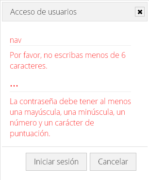
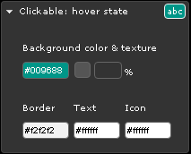
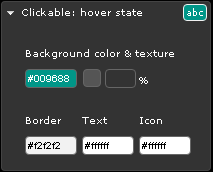

JavaScript
Para comprobar si JavaScript está activo o no en el navegador tenemos que utilizar la etiqueta noscript.
Cookies
Para comprobar si el navegador tiene las cookies activas vamos a utilizar la propiedad cookieEnabled del objeto navigator. Esta propiedad nos devolverá true en el caso de que las cookies estén activas y false en el caso de que no estén activas mostrando un mensaje informativo al usuario.
Aparecerá el siguiente mensaje informativo con un botón de aceptar para que el usuario puede quitar el mensaje del navegador.
Efecto en el inicio
En la página de inicio aparecerá el cartel de la Sysmana 2016, para ello hemos aplicado unos efectos. Primero oculto el cartel mediante el efecto hide() para que esté oculto al usuario, luego aplico al propio cartel un efecto show() con la propiedad explode para mostrarlo y por último voy ocultando el cartel con el efecto fadeOut().

Carrusel de imágenes
Para implementar el carrusel de imágenes utilizaremos la librería pgwslideshow, debemos descargarla de la página oficial PgwSlideshow.
Para utilizarla hay que linkear el archivo .css y el archivo .js de la librería en el head.
Ahora debemos crear el grupo de imágenes que formarán el carrusel, debemos implementarlo mediante una lista de imágenes que utilizaran el atributo alt para especificar el título de la misma.
Una vez implementado, la visualización de las imágenes será la siguiente:
LightBox de imágenes
Para implementar el lightbox de imágenes utilizaremos la librería lightbox2, debemos descargarla de la página oficial Lightbox.
Para utilizarla hay que linkear el archivo .css en el head y el archivo .js de la librería al final del body. Además hay que situar la carpeta images en la ruta correspondiente para hacer uso de las imágenes que uitliza lightbox.
Para usarlo en un grupo de imágenes tendremos que usar el atributo data-lightbox que sirve para agrupar a todas las imágenes pertenecientes al mismo lightbox.
Una vez implementado, la visualización de las imágenes será la siguiente:
Validación
Para la validación de los formularios he utilizado el plugin jQuery Validation, debemos descargarlo de la página oficial jQuery Validation Plugin.
La sintaxis utilizada es la siguiente:
- Utilizamos el método validate del formulario.
- Asignamos las reglas que aplicaremos a cada campo. El nombre de los parámetros ha de coincidir con el atributo name de los input.
- Las reglas más utilizadas son:
- required: especificamos que el campo sea obligatorio.
- minlength: especificamos la longitud mínima que debe tener el campo.
- min: especificamos el valor mínimo del campo.
- number: especificamos que el campo es solo de tipo numérico.
- También asignamos los mensajes de error en función del tipo de error.
En caso de producirse un error en el formulario, los errores se mostrarían de la siguiente forma:
Fechas
Para el control de fechas he utilizado un widget de JQuery UI llamado Datepicker.
Los parámetros de consiguración utilizados son:
- dateFormat: para indicar el formato en dd-mm-yy.
- minDate: para indicar la fecha mínima.
- maxDate: para indicar la fecha máxima.
- dayNames: para especificar el nombre de los días.
- dayNamesMin: para especificar el nombre de los días.
- monthNames: para especificar el nombre de los meses.
- monthNamesShort: para especificar el nombre de los meses.
- showAnim: para que semuestre con una animación.
Con el método onClose() activamos el datepicker de la fecha de fin y además le enviamos el día seleccionado, para que no se pueda seleccionar un día anterior al mismo.
jQuery UI
La versión de JQuery UI utilizada ha sido la 1.11.4 customizando el contenido de elementos que vamos a necesitar.
Theme
Hemos seleccionado el tema base y he añadido las modificaciones necesarias para mi página.
 
